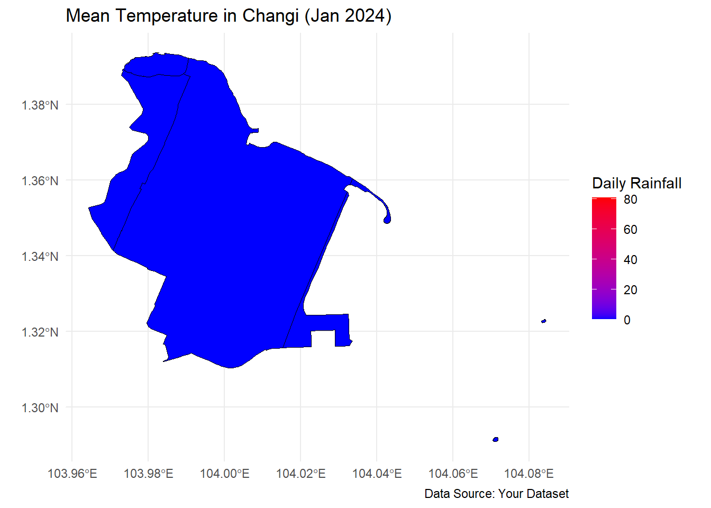

pacman::p_load(sp, sf, raster, spatstat, tmap, tidyverse,
spNetwork, tmaptools)Group_Project
c124 <- read_csv("data/changi_124.csv")Rows: 31 Columns: 13
── Column specification ────────────────────────────────────────────────────────
Delimiter: ","
chr (1): Station
dbl (12): Year, Month, Day, Daily Rainfall Total (mm), Highest 30 min Rainfa...
ℹ Use `spec()` to retrieve the full column specification for this data.
ℹ Specify the column types or set `show_col_types = FALSE` to quiet this message.geo = st_read(dsn = "data/geospatial",
layer = "MP14_SUBZONE_WEB_PL")Reading layer `MP14_SUBZONE_WEB_PL' from data source
`C:\brigittatsai\ISSS608_AY2024-25_T2_Group1\Project\Trial\data\geospatial'
using driver `ESRI Shapefile'
Simple feature collection with 323 features and 15 fields
Geometry type: MULTIPOLYGON
Dimension: XY
Bounding box: xmin: 2667.538 ymin: 15748.72 xmax: 56396.44 ymax: 50256.33
Projected CRS: SVY21st_geometry(geo)Geometry set for 323 features
Geometry type: MULTIPOLYGON
Dimension: XY
Bounding box: xmin: 2667.538 ymin: 15748.72 xmax: 56396.44 ymax: 50256.33
Projected CRS: SVY21
First 5 geometries:MULTIPOLYGON (((31495.56 30140.01, 31980.96 296...MULTIPOLYGON (((29092.28 30021.89, 29119.64 300...MULTIPOLYGON (((29932.33 29879.12, 29947.32 298...MULTIPOLYGON (((27131.28 30059.73, 27088.33 297...MULTIPOLYGON (((26451.03 30396.46, 26440.47 303...plot(st_geometry(geo))
st_crs(geo)Coordinate Reference System:
User input: SVY21
wkt:
PROJCRS["SVY21",
BASEGEOGCRS["SVY21[WGS84]",
DATUM["World Geodetic System 1984",
ELLIPSOID["WGS 84",6378137,298.257223563,
LENGTHUNIT["metre",1]],
ID["EPSG",6326]],
PRIMEM["Greenwich",0,
ANGLEUNIT["Degree",0.0174532925199433]]],
CONVERSION["unnamed",
METHOD["Transverse Mercator",
ID["EPSG",9807]],
PARAMETER["Latitude of natural origin",1.36666666666667,
ANGLEUNIT["Degree",0.0174532925199433],
ID["EPSG",8801]],
PARAMETER["Longitude of natural origin",103.833333333333,
ANGLEUNIT["Degree",0.0174532925199433],
ID["EPSG",8802]],
PARAMETER["Scale factor at natural origin",1,
SCALEUNIT["unity",1],
ID["EPSG",8805]],
PARAMETER["False easting",28001.642,
LENGTHUNIT["metre",1],
ID["EPSG",8806]],
PARAMETER["False northing",38744.572,
LENGTHUNIT["metre",1],
ID["EPSG",8807]]],
CS[Cartesian,2],
AXIS["(E)",east,
ORDER[1],
LENGTHUNIT["metre",1,
ID["EPSG",9001]]],
AXIS["(N)",north,
ORDER[2],
LENGTHUNIT["metre",1,
ID["EPSG",9001]]]]geo <- st_transform(geo, 3414)changi <- geo %>%
filter(SUBZONE_N %in% c("CHANGI AIRPORT", "CHANGI BAY",
"CHANGI POINT", "CHANGI WEST"))changi <- changi %>%
mutate(Station = "Changi")changi <- changi %>%
relocate(Station, .before = everything())changi <- left_join(changi, c124,
by = c("Station" = "Station"))Warning in sf_column %in% names(g): Detected an unexpected many-to-many relationship between `x` and `y`.
ℹ Row 1 of `x` matches multiple rows in `y`.
ℹ Row 1 of `y` matches multiple rows in `x`.
ℹ If a many-to-many relationship is expected, set `relationship =
"many-to-many"` to silence this warning.ggplot(changi) +
geom_sf(aes(fill = `Mean Temperature (°C)`), color = "black") +
scale_fill_gradient(low = "blue", high = "red", name = "Mean Temp (°C)") +
theme_minimal() +
labs(title = "Mean Temperature in Changi (Jan 2024)",
caption = "Data Source: Your Dataset") +
theme(legend.position = "right")